← All workProject 11 of 11
Project 11Designed and calculated, not built
Two-Cylinder Engine
A 296 cc air-cooled DOHC parallel twin with a 180 deg pressed crankshaft, 8 valves on direct buckets and a chain-driven cam drive. It is a 195-part Inventor working model driven by one crank-angle parameter and checked for clashes over the full 720 deg cycle. Cycle, balance, valve-train and strength calculations come with a con-rod FEA.
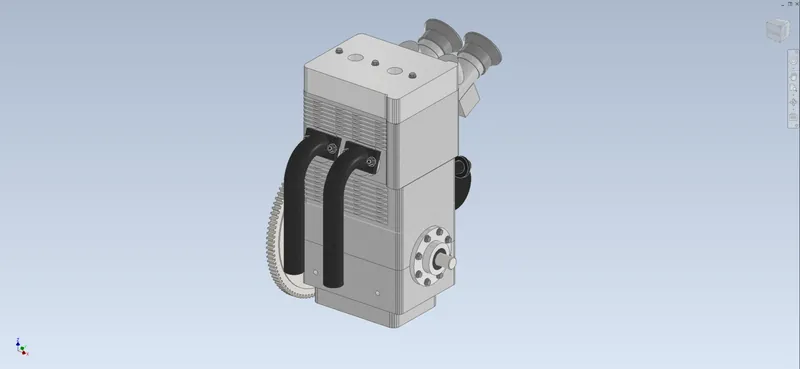
- Displacement, CR 10.6
- 296cc
- At 8500 rpm (calculated)
- 20.9kW
- Parts in assembly
- 195
- Clashes over 720 deg
- 0
01Overview
A four-stroke parallel twin for a test stand. The bore and stroke (62 x 49 mm) are those of the Kawasaki EX300, so its pistons, rings, buckets, springs and keepers can be bought; everything else is my own design. The 180 deg crank is built up and pressed: two outer webs with the mains and a one-piece centre section, joined by hardened crankpins that double as the needle-bearing races for one-piece 4340 rods. It runs in two 6306 bearings in a horizontally split case. The head is a pent-roof DOHC design with 4 valves per cylinder and direct-acting buckets. The cams turn at half crank speed through a 16T / 32T ANSI 25 chain with a fixed guide and a tensioner blade. The cam lobes come from an 8th-order polynomial lift law, and the flat-follower envelope is checked for undercut and contact offset.
The Inventor model is a working model. One parameter, Crank, turns the crank and flywheel, moves both pistons and rods by the exact slider-crank law, turns both camshafts at half speed and lifts all 8 valves from the cam law. It has zero free degrees of freedom, and the interference check finds no clashes at 21 crank angles over the 720 deg cycle. Its masses and inertias feed the calculations. Designed and calculated only; nothing has been built or run.
Tools Autodesk Inventor 2027 / Python / NumPy / SciPy / gmsh / scikit-fem / Matplotlib / Bambu Studio
What I did
- Drove a 195-part Inventor assembly from one parameter: slider-crank expressions for the pistons and rods, half-speed cams, and 8 valve lifts written as the cam lift law itself. I checked it against my Python model at 32 crank angles (0.0 error).
- Designed the cam lobes from an 8th-order polynomial lift law and generated the flat-follower envelope. The lobe outline matches the lift law to 0.00006 mm, with no undercut and the contact inside the bucket.
- Measured the clearances that decide whether an engine survives (piston to valve, valve to valve, squish) in Inventor through each overlap, and fixed a 0.16 mm valve-to-valve gap that only showed up that way.
- Ran a con-rod FEA from the Inventor STEP with quadratic tetrahedra and a Goodman check per speed, then changed the rod and re-ran it until the fatigue safety factor passed 1.5.
Specification
- Engine
- 296 cc 4-stroke air-cooled parallel twin, bore x stroke 62 x 49, rod 94, CR 10.6, 180 deg crank firing 180 / 540
- Valve train
- DOHC, 4 valves / cyl (custom 22 / 19 mm heads, EX300 buckets, springs, keepers), direct buckets 25 with shims; 7.15 mm cam lift, 240 deg at 0 lift; ANSI 25 chain 16T / 32T
- Bottom end
- Pressed crank: 4340 QT webs and centre, 52100 crankpins (press 0.065-0.082 mm); 2 x 6306/C3 mains; one-piece 4340 rods on K28x34x17 needles
- Fuel and ignition
- 2 x Mikuni VM26 with printed ASA velocity stacks, DC-CDI with a VR trigger on the flywheel, NGK CR8E plugs
- Starting
- Kohler 97T ring gear on the flywheel, Bendix starter
- Assembly
- 195 occurrences, 68 unique parts, 582 constraints, 0 DOF; driven by one parameter, Crank; 36.7 kg with the starter (Inventor)
- Bill of materials
- 101 lines incl. what a running engine needs beyond the CAD: $12,487, of which $1,705 confirmed on vendor listings
02Design decisions4 changes
- 01
Found touching valves by measuring the model
- Finding
- Sweeping each cylinder through overlap in 2 deg steps with Inventor's minimum-distance tool showed the intake and exhaust valve heads only 0.16 mm apart. The EX300-size 24 / 20.5 mm heads sat on centres 22 mm apart and both crossed the pent-roof ridge, leaving no metal between the seats.
- Action
- Changed to custom 22 / 19 mm valves at a slightly wider spacing. I chose the spacing so the cams move apart by only 0.8 mm and the chain path still fits the same 118-link chain (117.94 pitches). The rebuilt head, cams, chain parts and assembly come from the same design script.
- Outcome
- 2.64 mm between the valves through overlap, piston-to-valve 2.05 / 2.55 mm, squish 1.10 mm, all measured in Inventor. The inlet Mach index stays at 0.48, under the 0.6 where breathing falls off.
- 02
Pressed crankpins sized for slip, not for a round number
- Finding
- The first drawing called for a 0.04 mm press fit. A Lame thick-cylinder check of the pin in a 13 mm web gives a slip torque of 186 N m against a 147 N m peak crank torque: safety factor 1.27.
- Action
- Web bores are now 27.915 +/-0.004 mm on the 28 g5 pins, 0.065 to 0.082 mm interference.
- Outcome
- Slip safety factor 2.06 at the loosest fit, with 413 MPa hoop stress in the 4340 web at the tightest. The drawings carry the new tolerance.
- 03
Con-rod FEA moved material to the small end
- Finding
- A quadratic-tetrahedron FEA of the rod (gmsh and scikit-fem, 297,000 DOF) showed the sharp corners where the shank met the eyes. With a 4 mm wall around the small end, the tension stroke at the 8500 rpm limit gave a Goodman fatigue factor of only 1.18.
- Action
- Added R4 and R5 blends at the eyes and R1.5 pocket corners, and grew the small-end eye from 27 to 29 mm. The rod got 10 g heavier, and the forces, balance and valve float were recalculated with the new mass.
- Outcome
- Fatigue safety factor 1.58 at 8500 rpm, 1.72 at 8000 and 2.37 at 6000; yield safety factor 2.85 in tension and 5.6 in compression. It still clears the piston at all 21 crank angles.
- 04
Chose a 180 deg crank without a balance shaft
- Finding
- A 360 deg twin fires evenly but shakes with the full primary force of a single cylinder (10 kN at 8500 rpm). The 180 deg crank cancels the primary force and leaves a 209 N m rocking couple and a 2.6 kN secondary force.
- Action
- Kept the 180 deg crank (firing 180 / 540) for a stand-mounted engine and set the web counterweights with tungsten slugs to a 0.44 balance factor.
- Outcome
- No balance shaft. The uneven firing is absorbed by a 220 mm flywheel, with a speed fluctuation of 0.098 at idle against a 0.10 target.
03Views10 renders


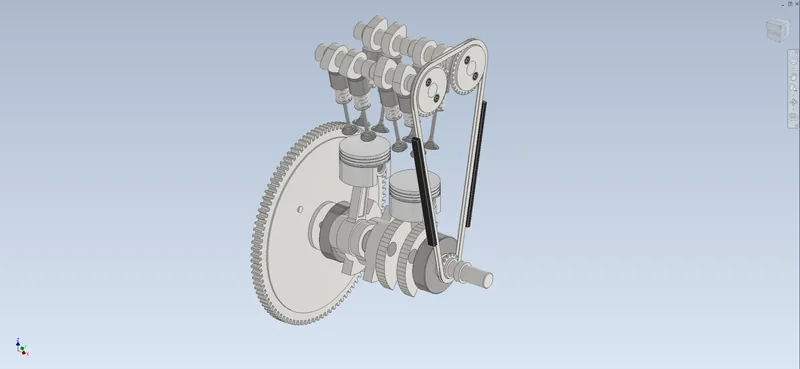

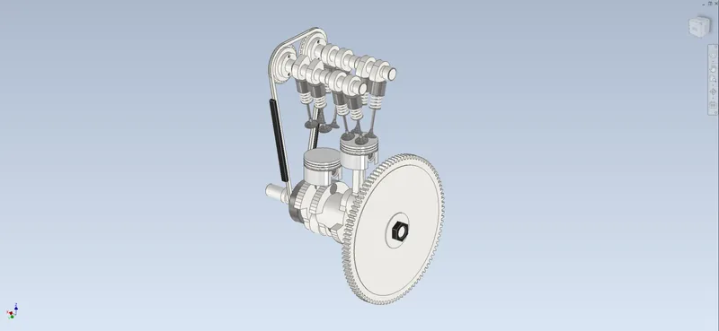

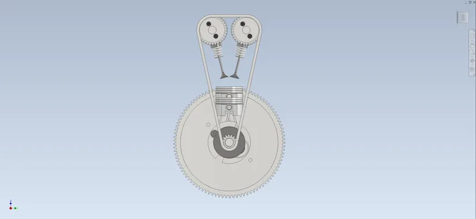

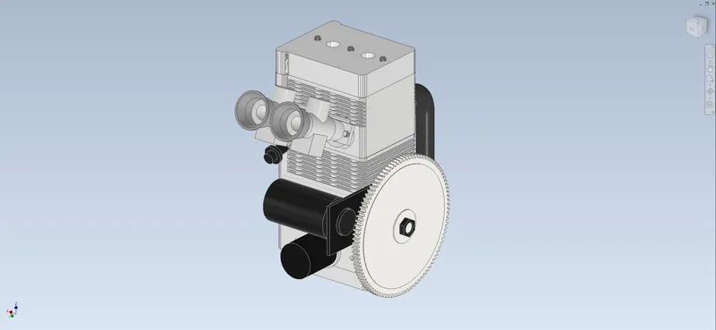

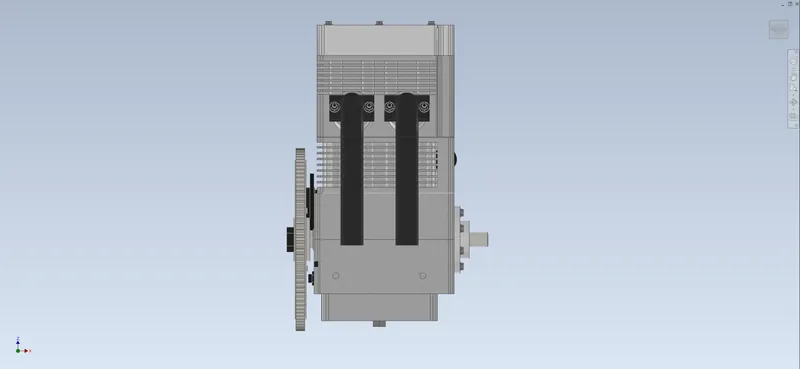

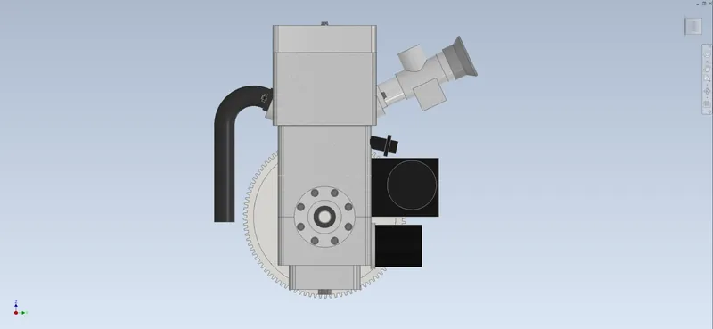

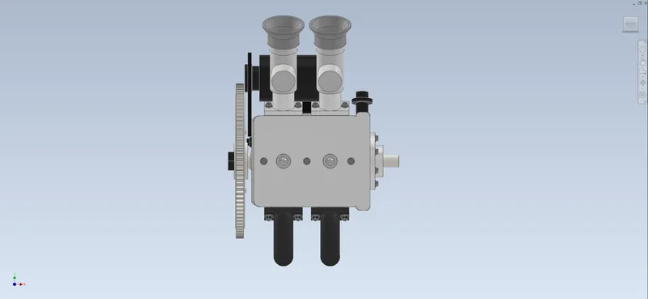

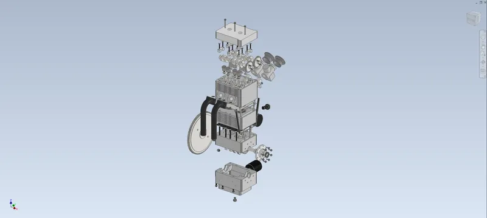

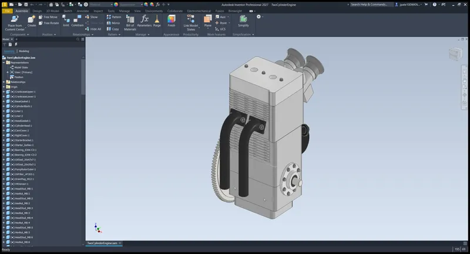
04Drawings7 sheets

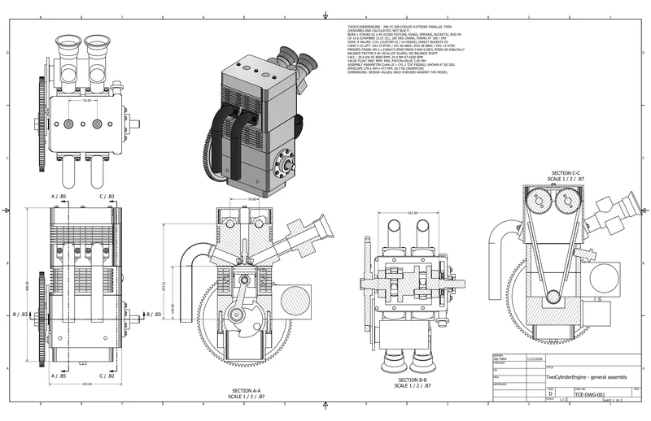

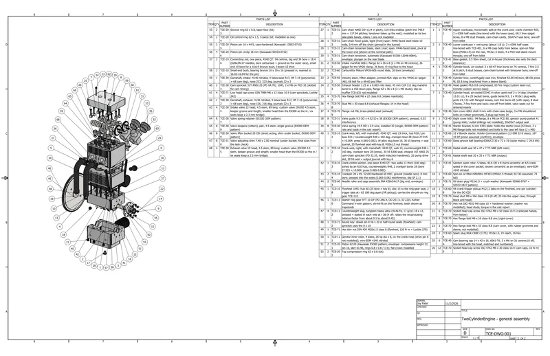

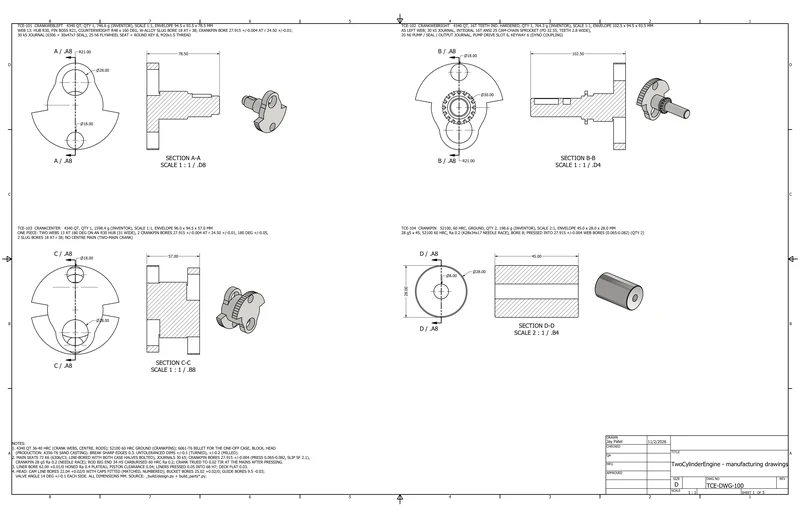

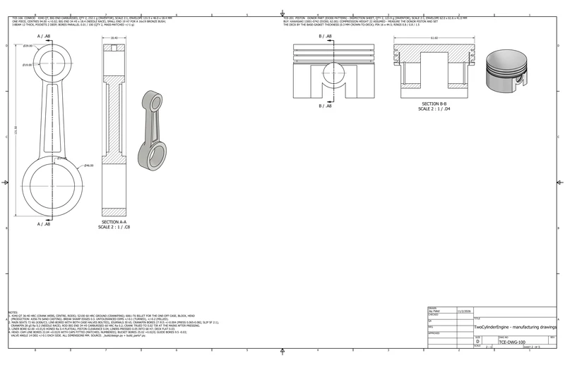

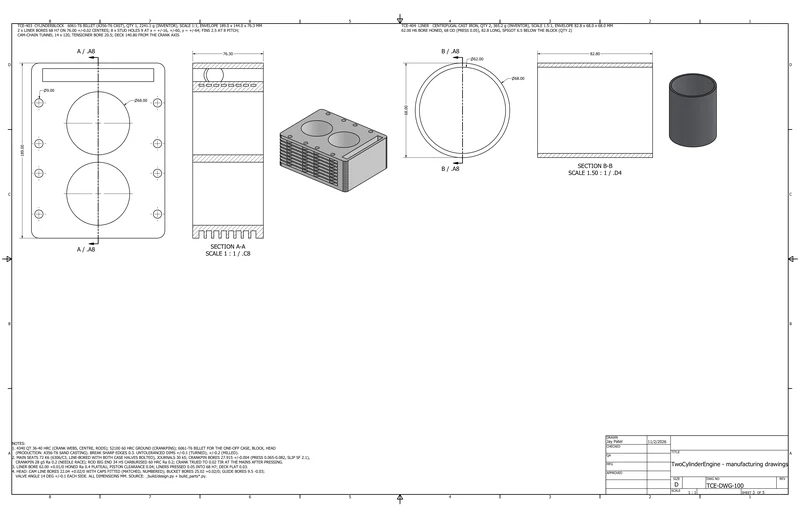

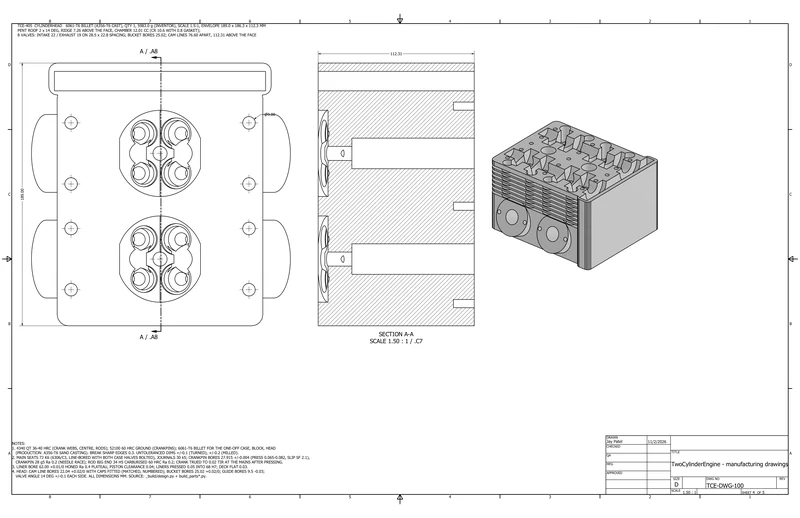

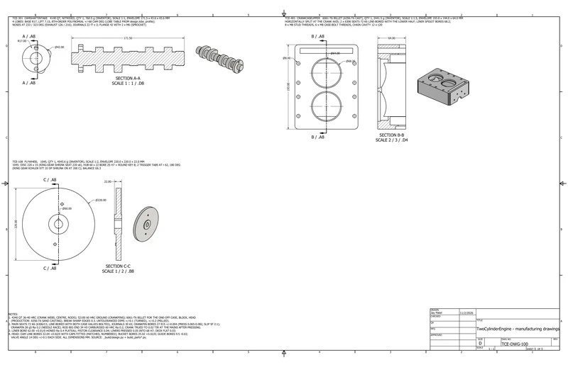
05Analysissimulated unless stated
A1 Kinematics, balance and performance

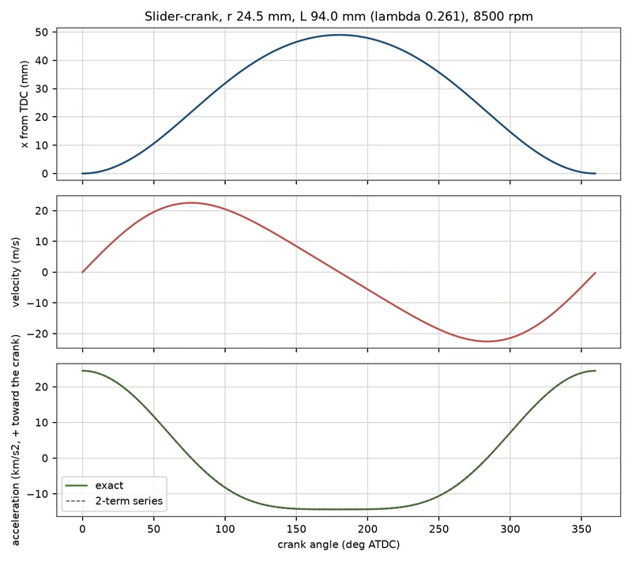

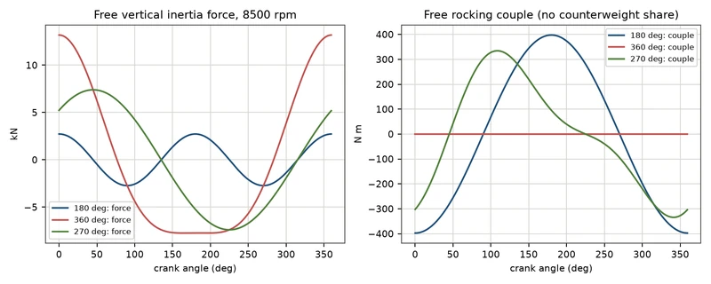

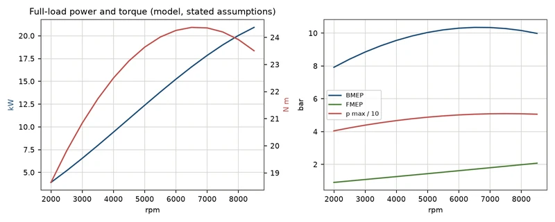

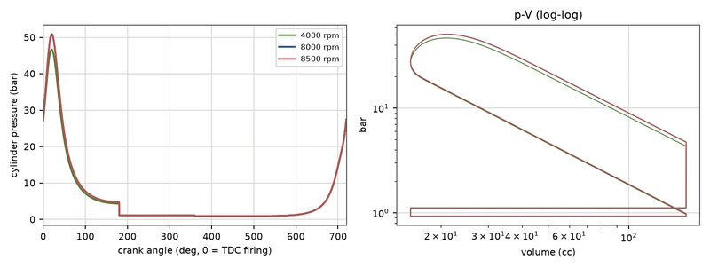
A2 Loads, valve train and FEA

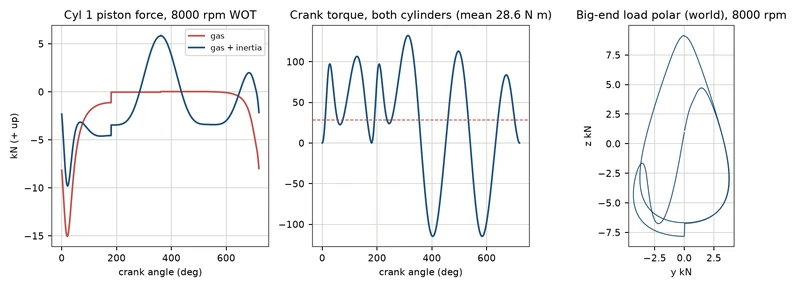

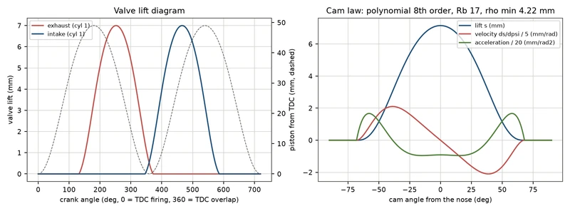

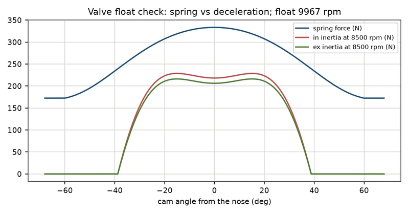

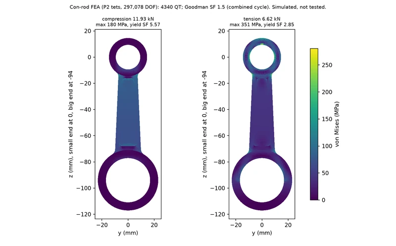
06Results8 checks
| Check | Result | Margin / status |
|---|---|---|
| Performance | 20.9 kW (28 hp) at 8500 rpm, 24.4 N m at 6500 rpm, 51 bar peak pressure (single-zone Wiebe cycle, assumed volumetric efficiency) | Calculated |
| Working model | 0 DOF, 0 clashes at 21 crank angles over 720 deg; crank, flywheel and cam rotations match the driver within 0.0000 deg | Checked in Inventor |
| Clearances | Piston to valve 2.05 / 2.55 mm, intake to exhaust valve 2.64 mm, piston to head 1.10 mm | Measured in Inventor |
| Valve train | Valve float at 9967 rpm (limit 8500); min. lobe radius of curvature 4.2 mm, contact offset 10.5 mm in a 12.5 mm bucket | Calculated |
| Con-rod | Yield SF 2.85 (tension 6.6 kN), 5.6 (compression 11.9 kN); fatigue SF 1.58 at 8500 rpm; buckling SF 11.8 | FEA and calculation |
| Crank and bolts | Crankpin press-fit slip SF 2.06; crankpin bending SF 39; head studs M8 10.9 clamp ratio 5.0 | Calculated |
| Bearings | Big-end needles L10 603 h at continuous 6000 rpm WOT, 141 h at 8000; mains 1770 / 819 h | Calculated |
| Cooling | About 9.5 kW continuous with a blower and an oil cooler; full-power pulls of about 80 s | Calculated |
07Parts list97 lines, $12,487.41
From the project's bill of materials (TwoCylinderEngine_BOM.csv), grouped by how you get each part. Quantities are from the CAD assembly. Prices marked Confirmed were checked against a vendor listing; Est. prices are estimates. Designed and calculated, not built.
- Buy · 192 pcs
- 65lines
- Print · 2 pcs
- 1line
- Fabricate · 40 pcs
- 29lines
- Hardware · 18 pcs
- 2lines
- Confirmed
- $1,705.09 13.7%
- Est.
- $10,782.32 86.3%
Not reviewed for completeness yet. The BOM has not been checked against a buildability review.
Made in Inventor designed and modelled by me Vendor model a purchased part, maker's or catalogue model placed in the assembly Stand-in model a simple placeholder shape Not in CAD needed to run it, not modelled
P1 Buy purchased and vendor parts · 65 lines, 192 pcs
| Qty | Part no. | Description | Unit | Line |
|---|---|---|---|---|
| 2 off | TCE-201 | Piston 62.00 (Kawasaki EX300 pattern; envelope: compression height 22, pin 16, skirt 61.96, rings 0.8 / 0.8 / 1.5); flat crown modelledStand-in modelSource: Kawasaki OEM / Wiseco / Vertex (EX300 kit) · Material: Aluminium 2618-T61 forged (piston)Price: (listing): Partzilla Kawasaki 13001-0742 piston (EX300, STD) MSRP $73.67, read 2026-10-29 | $73.67 | $147.34Confirmed2 × $73.67 |
| 1 off | TCE-312 | Cam chain ANSI 25H (1/4 in pitch), 118 links endless (pitch line 748.9 mm = 117.94 pitches; tensioner takes up the rest); modelled as its two side-plate bands, rollers / pins not modelledStand-in modelSource: Generic 25H roller chain + riveted master link · Material: AISI 1045 CD steelPrice: 25H roller chain 10 ft with connecting link about $31.95 + riveted master link $1.80 (search snippets) | $33.75 | $33.75Est.1 × $33.75 |
| 1 off | TCE-315 | Cam-chain tensioner, automatic (Kawasaki EX300 12048-0084), envelope; plunger on the rear bladeStand-in modelSource: Kawasaki OEM (Partzilla) · Material: AISI 1045 CD steelPrice: (listing): Partzilla Kawasaki 12048-0084 cam-chain tensioner MSRP $99.08, read 2026-10-29 | $99.08 | $99.08Confirmed1 × $99.08 |
| 2 off | TCE-605 | Carburettor Mikuni VM26-606 round slide, 26 bore (envelope)Stand-in modelSource: Mikuni America · Material: Aluminium die-cast carburettor bodyPrice: (listing): shop.mikuni.com Mikuni VM26-606 $142.00, read 2026-10-29 | $142.00 | $284.00Confirmed2 × $142.00 |
| 1 off | TCE-606 | Spin-on oil filter Hiflofiltro HF303 (M20x1.5 thread; 65 OD assumed, 73 tall)Stand-in modelSource: Hiflofiltro · Material: Mild steel 1018, high-temp blackPrice: Hiflofiltro HF303 about $7.06 (Partzilla related-products strip) | $7.06 | $7.06Est.1 × $7.06 |
| 1 off | TCE-607 | 12 V Bendix starter, Kohler Command pattern (12 098 22-S class), 16T 10 DP pinion assumed (confirm); envelopeStand-in modelSource: Kohler / aftermarket · Material: Steel / copper (starter motor)Price: Kohler 12 098 22-S starter about $120 (search snippet, price not read); pinion data to confirm | $120.00 | $120.00Est.1 × $120.00 |
| 1 off | TCE-608 | VR crank-trigger pickup M12 (2 tabs on the flywheel, one per cylinder) for the DC-CDIStand-in modelSource: Ignitech / generic VR pickup · Material: AISI 1045 CD steelPrice: VR pickup M12 (generic) | $30.00 | $30.00Est.1 × $30.00 |
| 2 off | TCE-107 | Small-end bush, bearing bronze 16 x 19 x 16 (pressed in, reamed to 16.02-16.04 for the pin)Vendor modelSource: McMaster-Carr (SAE 841 / C93200 sleeve bearing class) · Material: Bearing bronze C93200 | $6.00 | $12.00Est.2 × $6.00 |
| 1 off | TCE-110 | Starter ring gear 97T 10 DP (PD 246.4, OD 251.5, ID 220), Kohler Command V-twin pattern, shrink-fit on the flywheel; teeth shown as trapezoidsVendor modelSource: Vogel / Kohler Command ring gear (97T) · Material: AISI 1045 CD steelPrice: (listing): Vogel Manufacturing Kohler Command V-twin ring gear 97T $43.95, read 2026-10-29 | $43.95 | $43.95Confirmed1 × $43.95 |
| 4 off | TCE-112 | Counterweight slug, tungsten heavy alloy (W-Ni-Fe, 17 g/cc) 18 x 13, pressed + staked in each web at r 38 (4 off: raises the reciprocating balance factor from about 0.1 to about 0.45)Vendor modelSource: Tungsten heavy-alloy rod (Mallory / Densimet class), cut to length · Material: Tungsten heavy alloy 17.0 g/ccPrice: 18 mm W-alloy rod about $45 per 13 mm slug | $45.00 | $180.00Est.4 × $45.00 |
| 2 off | TCE-202 | Top compression ring 62 x 0.8 (kit)Vendor modelSource: part of the piston kit · Material: Cast iron / nitrided steel (piston ring)Price: (listing): Partzilla Kawasaki 13008-0047 ring set (one piston: top + 2nd + oil) MSRP $60.01, read 2026-10-29 | $60.01 | $120.02Confirmed2 × $60.01 |
| 2 off | TCE-203 | Second ring 62 x 0.8, taper face (kit)Vendor modelSource: part of the piston kit · Material: Cast iron / nitrided steel (piston ring) | Incl. | |
| 2 off | TCE-204 | Oil control ring 62 x 1.5, 3-piece (kit; modelled as one)Vendor modelSource: part of the piston kit · Material: Cast iron / nitrided steel (piston ring) | Incl. | |
| 2 off | TCE-205 | Piston pin 16 x 44.5, case-hardened (Kawasaki 13002-0710)Vendor modelSource: part of the piston kit · Material: 52100 through-hardened 60 HRCPrice: (listing): Partzilla Kawasaki 13002-0710 piston pin MSRP $28.95, read 2026-10-29 | $28.95 | $57.90Confirmed2 × $28.95 |
| 4 off | TCE-206 | Piston-pin circlip 16 mm (Kawasaki 92033-0732)Vendor modelSource: part of the piston kit · Material: Chrome-silicon valve spring wirePrice: (listing): Partzilla Kawasaki 92033-0732 circlip MSRP $3.23, read 2026-10-29 | $3.23 | $12.92Confirmed4 × $3.23 |
| 4 off | TCE-304 | Intake valve 22 head, 4.5 stem, 89 long: custom valve (EX300 4.5 stem, keeper groove and length; smaller head than the EX300 so the in / ex seats keep a 2.3 mm bridge)Vendor modelSource: Custom valve maker (e.g. Ferrea / Supertech made-to-print) · Material: Valve steel (21-4N exhaust / SUH11 intake)Price: made-to-print custom 22 mm intake valve, small batch (the EX300 intake valve, Partzilla 12004-0716 $43.83, has a larger head and no longer fits the layout) | $55.00 | $220.00Est.4 × $55.00 |
| 4 off | TCE-305 | Exhaust valve 19 head, 4.5 stem, 89 long: custom valve (EX300 4.5 stem, keeper groove and length; smaller head than the EX300 so the in / ex seats keep a 2.3 mm bridge)Vendor modelSource: Custom valve maker (e.g. Ferrea / Supertech made-to-print) · Material: Valve steel (21-4N exhaust / SUH11 intake)Price: made-to-print custom 19 mm exhaust valve (21-4N), small batch (EX300 exhaust valve 12005-0057 $72.00 for reference) | $65.00 | $260.00Est.4 × $65.00 |
| 8 off | TCE-306 | Valve spring 19.5 OD x 2.9 wire, installed 32 (single, EX300 OEM pattern; rate and loads in the calc report)Vendor modelSource: Kawasaki OEM (EX300) · Material: Chrome-silicon valve spring wirePrice: (listing): Partzilla Kawasaki 49078-0077 valve spring $13.46, read 2026-10-29 | $13.46 | $107.68Confirmed8 × $13.46 |
| 8 off | TCE-307 | Valve spring retainer (EX300 OEM pattern)Vendor modelSource: Kawasaki OEM (EX300) · Material: AISI 4140 QT, gas nitridedPrice: (listing): Partzilla Kawasaki 12009-1073 spring retainer $8.44, read 2026-10-29 | $8.44 | $67.52Confirmed8 × $8.44 |
| 8 off | TCE-308 | Valve keepers (cotters), pair, 4.5 stem, single groove (EX300 OEM pattern)Vendor modelSource: Kawasaki OEM (EX300) · Material: AISI 4140 QT, gas nitridedPrice: (listing): Partzilla Kawasaki 12011-1053 keeper $4.34 each x 2 per valve, read 2026-10-29 | $8.68 | $69.44Confirmed8 × $8.68 |
| 8 off | TCE-309 | Valve lifter bucket 25 OD (direct acting, shim under bucket; EX300 OEM pattern)Vendor modelSource: Kawasaki OEM (EX300) · Material: AISI 4140 QT, gas nitridedPrice: (listing): Partzilla Kawasaki 12032-0008 valve lifter MSRP $44.19, read 2026-10-29 | $44.19 | $353.52Confirmed8 × $44.19 |
| 8 off | TCE-310 | Valve adjusting shim 7.48 x 2.00 nominal (under bucket; final sizes from the lash check)Vendor modelSource: Hot Cams / Kawasaki (7.48 mm shim) · Material: 52100 through-hardened 60 HRCPrice: (listing): Partzilla Kawasaki 92180-10xx shim 7.48 mm $14.27, read 2026-10-29 (size from the lash check) | $14.27 | $114.16Confirmed8 × $14.27 |
| 8 off | TCE-311 | Valve guide 9.5 OD x 4.52 ID x 38 (EX300 OEM pattern), pressed, 0.03 interferenceVendor modelSource: Kawasaki OEM (EX300) · Material: Bearing bronze C93200Price: valve guide (EX300 pattern) not priced in the research | $12.00 | $96.00Est.8 × $12.00 |
| 2 off | TCE-601 | Deep groove ball bearing 6306/C3 30 x 72 x 19 (outer mains; C 29.6 kN)Vendor modelSource: SKF / NSK · Material: Bearing steel (52100)Price: SKF 6306/C3 not read; 6305/C3 $15.80 confirmed at Quality Bearings Online 2026-10-29 | $18.00 | $36.00Est.2 × $18.00 |
| 2 off | TCE-603 | Needle roller and cage assembly INA K28x34x17 (big end; envelope)Vendor modelSource: Schaeffler INA · Material: Bearing steel (52100)Price: INA K28X34X17A 'quote required' at Motion (ratings C 21.8 kN / C0 33.5 kN read there) | $25.00 | $50.00Est.2 × $25.00 |
| 2 off | TCE-604 | Spark plug NGK CR8E (1275): M10x1.0, 19 reach, 16 hexVendor modelSource: NGK (Sportbike Track Gear) · Material: Steel shell / alumina insulator (spark plug)Price: (listing): Sportbike Track Gear NGK CR8E (1275) $16.16, read 2026-10-29 | $16.16 | $32.32Confirmed2 × $16.16 |
| 1 off | TCE-609 | Radial shaft seal 30 x 47 x 7 TC NBR (left main)Vendor modelSource: SKF / generic TC · Material: NBR rubber / steel casePrice: TC 30x47x7 NBR seal (listings seen, price not read) | $2.50 | $2.50Est.1 × $2.50 |
| 1 off | TCE-611 | Radial shaft seal 20 x 35 x 7 TC NBR (output)Vendor modelSource: SKF / generic TC · Material: NBR rubber / steel casePrice: TC 20x35x7 NBR seal | $2.00 | $2.00Est.1 × $2.00 |
| 8 off | TCE-701 | Head stud M8 x 166 class 10.9 (8 off; 20 into the upper case, through block and head)Vendor modelSource: McMaster-Carr / ARP class · Material: Steel, class 10.9 black oxide | $3.50 | $28.00Est.8 × $3.50 |
| 8 off | TCE-702 | Hex nut ISO 4032 M8 class 10 + hardened washer (washer not modelled); head studs, torque in the calc reportVendor modelSource: McMaster-Carr / ARP class · Material: Steel, class 10.9 black oxide | $0.60 | $4.80Est.8 × $0.60 |
| 8 off | TCE-705 | Hex flange bolt M6 x 16 class 8.8 zinc (right cover)Vendor modelSource: McMaster-Carr / any · Material: Steel, class 8.8 zinc | $0.25 | $2.00Est.8 × $0.25 |
| 3 off | TCE-706 | Hex flange bolt M6 x 55 class 8.8 (cam cover, with rubber grommet and sleeve, not modelled)Vendor modelSource: McMaster-Carr / any · Material: Steel, class 8.8 zinc | $0.50 | $1.50Est.3 × $0.50 |
| 4 off | TCE-707 | Hex flange bolt M6 x 22 class 8.8 (intake manifolds)Vendor modelSource: McMaster-Carr / any · Material: Steel, class 8.8 zinc | $0.30 | $1.20Est.4 × $0.30 |
| 4 off | TCE-708 | Stud M6 x 30 class 8.8 (exhaust flanges; 14 in the head)Vendor modelSource: McMaster-Carr / ARP class · Material: Steel, class 10.9 black oxide | $0.60 | $2.40Est.4 × $0.60 |
| 4 off | TCE-709 | Flange nut M6, brass-plated steel (exhaust)Vendor modelSource: McMaster-Carr / any · Material: Steel, class 10.9 black oxide | $0.40 | $1.60Est.4 × $0.40 |
| 4 off | TCE-710 | Low head cap screw DIN 7984 M6 x 12 class 10.9 (cam sprockets, Loctite 243)Vendor modelSource: McMaster-Carr / any · Material: Steel, class 10.9 black oxide | $0.50 | $2.00Est.4 × $0.50 |
| 1 off | TCE-711 | Hex thin nut DIN 439 M20x1.5 class 8 (flywheel, 120 N m + Loctite 270)Vendor modelSource: McMaster-Carr / any · Material: Steel, class 10.9 black oxide | $2.50 | $2.50Est.1 × $2.50 |
| 1 off | TCE-712 | Round key: dowel pin 8 h6 x 20 in half-round seats (flywheel); cam sprocket uses the 8 x 10Vendor modelSource: McMaster-Carr dowel pin · Material: 52100 through-hardened 60 HRC | $1.00 | $1.00Est.1 × $1.00 |
| 1 off | TCE-714 | Oil drain plug M12x1.5 + crush washer (Kawasaki 92066-0767 + 92022-1827 pattern)Vendor modelSource: Kawasaki OEM (Partzilla) · Material: Steel, class 8.8 zincPrice: (listing): Partzilla Kawasaki 92066-0767 drain plug $5.45 + 92022-1827 washer $3.72, read 2026-10-29 | $9.17 | $9.17Confirmed1 × $9.17 |
| 1 off | TCE-620 | ASA filament 1 kg spool (Bambu Lab ASA): 2 velocity stacks TCE-502, about 45 g printedNot in CADSource: Bambu Lab (MatterHackers listing) · Material: ASAPrice: (listing): MatterHackers Bambu Lab ASA 1 kg, read 2026-10-29 | $46.99 | $46.99Confirmed1 × $46.99 |
| 8 off | TCE-801 | Valve stem seal Kawasaki 92049-1349 (EX300), on each guideNot in CADSource: Kawasaki OEM (Partzilla) · Material: FKM / steelPrice: (listing): Partzilla Kawasaki 92049-1349 valve stem seal $9.14, read 2026-10-29 | $9.14 | $73.12Confirmed8 × $9.14 |
| 8 off | TCE-802 | Valve spring seat Kawasaki 16007-0028 (EX300), under each springNot in CADSource: Kawasaki OEM (Partzilla) · Material: SteelPrice: (listing): Partzilla Kawasaki 16007-0028 spring seat $5.01, read 2026-10-29 | $5.01 | $40.08Confirmed8 × $5.01 |
| 1 off | TCE-803 | Valve shim kit 7.48 mm Hot Cams HCSHIM01 (to set the 0.15-0.24 IN / 0.22-0.29 EX clearance after the first measurement)Not in CADSource: Hot Cams (Dennis Kirk) · Material: SteelPrice: Hot Cams HCSHIM01 7.48 mm shim kit (kit price not read) | $65.00 | $65.00Est.1 × $65.00 |
| 8 off | TCE-804 | Valve seat insert, sintered iron, shrunk into the billet head and cut 45 deg (seat OD per the donor valve)Not in CADSource: Seat-insert supplier (custom OD) · Material: Sintered ironPrice: sintered valve seat insert, custom OD | $15.00 | $120.00Est.8 × $15.00 |
| 1 off | TCE-805 | Ignition: Ignitech DC-CDI-P2 programmable 2-channel 12 V DC-CDI (one VR input, 2 tabs = one per cylinder, wasted spark), 8500 rpm limiterNot in CADSource: Ignitech (eBay reseller) · Material: -Price: Ignitech DC-CDI-P2 kit $419.14 (eBay listing snippet; Ignitech price list not downloadable) | $419.14 | $419.14Est.1 × $419.14 |
| 2 off | TCE-806 | Ignition coil Ignitech IC-CDI-S single output (one per cylinder, on the test stand)Not in CADSource: Ignitech / Racedom · Material: -Price: Ignitech IC-CDI-S coil (sister IC-CDI-D EUR 36.29 seen) | $40.00 | $80.00Est.2 × $40.00 |
| 2 off | TCE-807 | Plug cap NGK + 7 mm HT leadNot in CADSource: NGK · Material: -Price: NGK plug cap + 7 mm lead | $15.00 | $30.00Est.2 × $15.00 |
| 2 off | TCE-808 | Carburettor clamp + O-ring for the 36 mm manifold spigotNot in CADSource: Hardware store / Mikuni · Material: Steel / NBR | $10.00 | $20.00Est.2 × $10.00 |
| 2 off | TCE-809 | Pod air filter Uni, to suit the 68 mm velocity-stack bell (TCE-502)Not in CADSource: Uni (Scooter Swap Shop snippet) · Material: FoamPrice: Uni pod filter about $30.99 (search snippet) | $30.99 | $61.98Est.2 × $30.99 |
| 1 off | TCE-810 | Throttle: dual-pull cable + bell-crank linkage synchronising both VM26 slides, throttle lever on the standNot in CADSource: Motion Pro / generic · Material: Steel / PTFE | $35.00 | $35.00Est.1 × $35.00 |
| 1 off | TCE-811 | Fuel system: 3 L gravity tank, petcock, inline filter, 2 m of 1/4 in fuel hose, T-piece to both carbsNot in CADSource: Generic · Material: Steel / NBR | $60.00 | $60.00Est.1 × $60.00 |
| 2 off | TCE-812 | Muffler, universal 1-1/4 in slip-on, on each header TCE-503Not in CADSource: Generic (eBay) · Material: SteelPrice: universal 1-1/4 in slip-on muffler from $99.99 (search snippet) | $99.99 | $199.98Est.2 × $99.99 |
| 2 off | TCE-813 | Exhaust port gasket (crush ring / flange gasket 62 x 36)Not in CADSource: Generic · Material: Copper / graphite | $5.00 | $10.00Est.2 × $5.00 |
| 1 off | TCE-814 | Battery 12 V YTX9-BS AGM (starter + DC-CDI)Not in CADSource: Speed Addicts / generic · Material: Lead-acid AGMPrice: YTX9-BS AGM $78.71 (Speed Addicts snippet; generic $55.88) | $78.71 | $78.71Est.1 × $78.71 |
| 1 off | TCE-815 | Battery charger Battery Tender Junior 021-0123 (no alternator on the test-stand engine)Not in CADSource: Deltran · Material: -Price: Battery Tender Junior 021-0123 about $40 (snippet) | $40.00 | $40.00Est.1 × $40.00 |
| 1 off | TCE-816 | Wiring: kill switch, starter relay (solenoid) + push button, 30 A fuse, 12 V harness, earth strapNot in CADSource: Generic · Material: Copper / PVCPrice: kill switch $11.99 (snippet) + starter relay + 30 A fuse + harness | $75.00 | $75.00Est.1 × $75.00 |
| 1 off | TCE-817 | Inductive tachometer (on a plug lead)Not in CADSource: Generic (AUGREX class) · Material: -Price: inductive tachometer $19.94 (snippet) | $20.00 | $20.00Est.1 × $20.00 |
| 2 off | TCE-818 | Engine oil 4-stroke 10W-40, 1 L (sump about 1.8 L incl. filter)Not in CADSource: Motul 7100 / any · Material: OilPrice: Motul 7100 4T 10W-40 about $14 per litre | $14.00 | $28.00Est.2 × $14.00 |
| 1 off | TCE-819 | Oil cooler 7-row + -6 lines, in the blower stream (4 kW assumed in the cooling calc), take-off at the filter bossNot in CADSource: Generic · Material: Aluminium | $80.00 | $80.00Est.1 × $80.00 |
| 1 off | TCE-820 | Cooling blower for the stand: ≥ 25 m/s over the fins (air-cooled engine on a stationary stand), 0.25-0.37 kW centrifugalNot in CADSource: Generic (Dayton class) · Material: - | $150.00 | $150.00Est.1 × $150.00 |
| 1 off | TCE-821 | Sealant Hylomar Universal Blue 100 g (crankcase split line, cover faces)Not in CADSource: Hylomar (Lucky8 listing) · Material: -Price: (listing): Lucky8 Off Road Hylomar Universal Blue 100 g $25.88, read 2026-10-29 | $25.88 | $25.88Confirmed1 × $25.88 |
| 1 off | TCE-822 | Cam-cover gasket (rubber, cut) + 3 rubber grommets / steel sleeves for the cover bolts TCE-706Not in CADSource: Gasket sheet, cut in-house · Material: NBR | $15.00 | $15.00Est.1 × $15.00 |
| 1 off | TCE-825 | Output coupling to the dyno / load (jaw coupling, 20 mm bore with key 6)Not in CADSource: Lovejoy L100 class · Material: Steel / urethanePrice: jaw coupling 20 mm bore class | $40.00 | $40.00Est.1 × $40.00 |
| 1 off | TCE-826 | Assembly consumables: Loctite 243 / 270 / 641, assembly lube, Molykote on the cam lobesNot in CADSource: Loctite / Dow · Material: - | $30.00 | $30.00Est.1 × $30.00 |
| 1 off | TCE-828 | Crank pressing + truing service (5 pieces, 2 pins, 4 slugs; 0.02 TIR at the mains)Not in CADSource: Crank shop · Material: -Price: press-assemble and true the crank (shop service) | $150.00 | $150.00Est.1 × $150.00 |
| Buy subtotal | $4,609.21 | |||
P2 Print 3D-printed parts · 1 line, 2 pcs
| Qty | Part no. | Description | Unit | Line |
|---|---|---|---|---|
| 2 off | TCE-502 | Velocity stack / filter adapter, printed ASA: slips on the VM26 air spigot (46), 68 bell for a 48-60 pod filterMade in InventorSource: 3D printed in-house (Bambu ASA) · Material: ASA, printed (Bambu ASA), 4 walls, 30 % gyroid | Incl. | |
| Print subtotal | $0.00 | |||
P3 Fabricate machined, welded and cut parts · 29 lines, 40 pcs
| Qty | Part no. | Description | Unit | Line |
|---|---|---|---|---|
| 1 off | TCE-101 | Crank web, left, with mainshaft: 4340 QT, web 13 thick, hub R30 / pin boss R21 / counterweight R48 x 160 deg, crankpin bore 28 (bore 27.915 +/-0.004: press 0.065-0.082), W-alloy slug bore 18, 30 k5 bearing + seal journal, 25 flywheel seat with key 8, M20x1.5 nut threadMade in InventorSource: Machined in-house · Material: AISI 4340 QT 36-40 HRCPrice: CNC turn + mill + grind, one-off | $260.00 | $260.00Est.1 × $260.00 |
| 1 off | TCE-102 | Crank web, right, with mainshaft: 4340 QT, web 13, counterweight R48 x 160 deg, crankpin bore 28 (press), 30 k5 6306 seat, integral 16T ANSI 25 cam-chain sprocket (PD 32.55, teeth induction hardened), 20 pump drive slot, 20 h6 seal + output journal with key 6Made in InventorSource: Machined in-house · Material: AISI 4340 QT 36-40 HRCPrice: CNC turn + mill + grind, one-off | $280.00 | $280.00Est.1 × $280.00 |
| 1 off | TCE-103 | Crank centre section, one piece 4340 QT: two webs 13 thick (180 deg) joined by an R30 hub, counterweights R48, 2 crankpin bores 28 (bore 27.915 +/-0.004: press 0.065-0.082)Made in InventorSource: Machined in-house · Material: AISI 4340 QT 36-40 HRCPrice: CNC, one-off | $260.00 | $260.00Est.1 × $260.00 |
| 2 off | TCE-104 | Crankpin 28 x 45, 52100 hardened 60 HRC, ground (needle race), 8 mm bore; pressed into the webs (0.065-0.082 interference, slip SF 2.1)Made in InventorSource: Machined in-house · Material: 52100 through-hardened 60 HRCPrice: turn + harden + grind | $45.00 | $90.00Est.2 × $45.00 |
| 2 off | TCE-106 | Connecting rod, one piece, 4340 QT: 94 centres, big end 34 bore x 18.4 (K28x34x17 needles, bore carburised + ground as the outer race), small end 19 bore for a 16x19 bronze bush, I-beam 12 thickMade in InventorSource: Machined in-house · Material: AISI 4340 QT 36-40 HRCPrice: wire-EDM profile + CNC + heat treat + hone, one-off | $220.00 | $440.00Est.2 × $220.00 |
| 1 off | TCE-108 | Flywheel 1045: hub 60 (25 bore + key 8), disc 15 to the ring-gear seat, 2 trigger tabs at r 62 180 deg apart (VR pickup); carries the shrunk-on ring gear TCE-110Made in InventorSource: Machined in-house · Material: AISI 1045 CD steelPrice: CNC turn, one-off | $120.00 | $120.00Est.1 × $120.00 |
| 1 off | TCE-111 | Gerotor inner rotor, 4 lobes, 26 tip dia x 8, on the crank nose (drive pin 6 not modelled); wire-EDM 4140 nitridedMade in InventorSource: Wire-EDM in-house class · Material: AISI 4140 QT, gas nitridedPrice: wire EDM pair TCE-111/412 $120 | $60.00 | $60.00Est.1 × $60.00 |
| 1 off | TCE-301 | Camshaft, intake: 4140 nitrided, 4 lobes base R17, lift 7.15 (polynomial, ±68 cam deg), nose 233, 323 deg, journals 22 x 3Made in InventorSource: Machined in-house · Material: AISI 4140 QT, gas nitridedPrice: CNC cam grinding one-off (Web Cam / Megacycle class) | $320.00 | $320.00Est.1 × $320.00 |
| 1 off | TCE-302 | Camshaft, exhaust: 4140 nitrided, 4 lobes base R17, lift 7.15 (polynomial, ±68 cam deg), nose 126, 216 deg, journals 22 x 3Made in InventorSource: Machined in-house · Material: AISI 4140 QT, gas nitridedPrice: CNC cam grinding one-off (Web Cam / Megacycle class) | $320.00 | $320.00Est.1 × $320.00 |
| 2 off | TCE-303 | Cam sprocket 32T ANSI 25 (PD 64.78), 1045, 2 x M6 on PCD 32 (slotted for cam timing)Made in InventorSource: Machined in-house · Material: AISI 1045 CD steelPrice: CNC | $45.00 | $90.00Est.2 × $45.00 |
| 1 off | TCE-401 | Upper crankcase, horizontally split at the crank axis: crank chamber R55, 2 x 6306 half seats (line-bored with the lower case), 68.2 liner spigot bores, 8 x M8 stud threads, cam-chain cavity, 30x47x7 seal bore; one-off from billetMade in InventorSource: CNC in-house (production: sand-cast A356-T6) · Material: Aluminium A356-T6 (billet 6061-T6 for the one-off)Price: 5-axis CNC from billet, one-off, incl. line boring with TCE-402 | $950.00 | $950.00Est.1 × $950.00 |
| 1 off | TCE-402 | Lower crankcase + wet sump (about 1.8 L): 2 x 6306 half seats line-bored with TCE-401, 6 x M8 case bolts from below, spin-on filter boss (M20x1.5) on the rear, M12x1.5 drain, 4 x M10 test-stand mount threads; one-off from billetMade in InventorSource: CNC in-house (production: sand-cast A356-T6) · Material: Aluminium A356-T6 (billet 6061-T6 for the one-off)Price: 5-axis CNC from billet, one-off | $900.00 | $900.00Est.1 × $900.00 |
| 1 off | TCE-403 | Cylinder block, air-cooled: 2 x 68 H7 liner bores on 76 centres, 7 fins 2.5 at 8 pitch, 8 stud bosses, cam-chain tunnel with tensioner bore; one-off from billetMade in InventorSource: CNC in-house (production: sand-cast A356-T6) · Material: Aluminium A356-T6 (billet 6061-T6 for the one-off)Price: CNC from billet, one-off | $700.00 | $700.00Est.1 × $700.00 |
| 2 off | TCE-404 | Cylinder liner, centrifugally cast iron, finished 62.00 H6 bore, 68 OD press fit, 82.8 long (machined from a sleeve blank)Made in InventorSource: LA Sleeve blank, finish-machined · Material: Grey cast iron (centrifugal liner)Price: LA Sleeve FL1118 class blank about $99 (snippet) + in-house boring / honing | $99.00 | $198.00Est.2 × $99.00 |
| 1 off | TCE-405 | Cylinder head, air-cooled DOHC 4-valve: pent roof 2 x 14 deg (chamber 12.01 cc), 8 x 25 bucket bores, guide bores 9.5, 2 x M10x1 plug wells, ports 24 / 22 with flanged bosses, cam line bores 22 (with caps), 8 stud C'bores, 7 fins front and back; one-off from billet, valve seats cut for sintered insertsMade in InventorSource: CNC in-house (production: sand-cast A356-T6) · Material: Aluminium A356-T6 (billet 6061-T6 for the one-off)Price: 5-axis CNC from billet + seat / guide work, one-off | $1,600.00 | $1,600.00Est.1 × $1,600.00 |
| 6 off | TCE-406 | Cam bearing cap 14 x 42 x 16, 6061-T6, 2 x M6 on 31 centres (6 off, line-bored with the head, matched and numbered)Made in InventorSource: Machined in-house · Material: Aluminium 6061-T6 | $25.00 | $150.00Est.6 × $25.00 |
| 1 off | TCE-407 | Cam cover 6061 shell 4 mm with chain-case bulge, 3 x M6 shouldered bolts on rubber grommets, 2 plug-cap holes 24Made in InventorSource: Machined in-house · Material: Aluminium 6061-T6Price: CNC pocketed from billet | $260.00 | $260.00Est.1 × $260.00 |
| 1 off | TCE-408 | Right cover 6061: 94 flange, 8 x M6 on PCD 80, gerotor pump pocket 41 (pump inlet / outlet drillings not modelled), 20x35x7 output sealMade in InventorSource: Machined in-house · Material: Aluminium 6061-T6Price: CNC turn + drill | $140.00 | $140.00Est.1 × $140.00 |
| 1 off | TCE-412 | Gerotor outer rotor, 5 lobes, 40.6 OD x 8 (turns eccentric at 4/5 crank speed in the cover pocket; shown concentric as an envelope); wire-EDM 4140 nitridedMade in InventorSource: Wire-EDM in-house class · Material: AISI 4140 QT, gas nitrided | $60.00 | $60.00Est.1 × $60.00 |
| 2 off | TCE-501 | Intake manifold 6061: flange 62 x 36 x 8 (2 x M6 on 48 centres), 36 spigot for the VM26 clamp, 26 bore; O-ring face to the headMade in InventorSource: Machined in-house · Material: Aluminium 6061-T6Price: CNC | $60.00 | $120.00Est.2 × $60.00 |
| 1 off | TCE-313 | Cam-chain fixed guide, tight (front) span: PA46-faced steel blade 10 wide, 0.4 mm off the chain (pinned in the tunnel)Made in InventorSource: Fabricated (steel + PA46 facing) · Material: PA46 on steel backing (chain guide) | $30.00 | $30.00Est.1 × $30.00 |
| 1 off | TCE-314 | Cam-chain tensioner blade, slack (rear) span, PA46-faced steel, pivot at the lower end (shown at the nominal path)Made in InventorSource: Fabricated (steel + PA46 facing) · Material: PA46 on steel backing (chain guide) | $30.00 | $30.00Est.1 × $30.00 |
| 1 off | TCE-409 | Head gasket MLS 0.8 compressed, 63 fire rings (custom laser-cut; Cometic custom service class)Made in InventorSource: Cometic custom MLS (or laser-cut copper sheet) · Material: Multi-layer steel (MLS) gasketPrice: custom MLS one-off (Cometic custom price not found) | $120.00 | $120.00Est.1 × $120.00 |
| 1 off | TCE-410 | Base gasket, 0.5 fibre sheet, cut in-house (thickness also sets the deck clearance)Made in InventorSource: Gasket sheet, cut in-house · Material: Gasket fibre sheet 0.5 mm | $8.00 | $8.00Est.1 × $8.00 |
| 1 off | TCE-411 | Starter bracket, 6 mm S355 plate: holds the starter nose (42 bore, 2 x M8 flange bolts not modelled) and bolts to the case left face (2 x M8)Made in InventorSource: Laser-cut in-house class · Material: Mild steel 1018, high-temp black | $35.00 | $35.00Est.1 × $35.00 |
| 2 off | TCE-503 | Exhaust header 1.25 in x 0.063 mild steel, 45 mm CLR 112 deg mandrel bend to a 150 down pipe, flange 62 x 36 x 8 (2 x M6 studs); slip-on muffler TCE-631 not modelledMade in InventorSource: Fabricated in-house (mandrel bend + TIG) · Material: Mild steel 1018, high-temp blackPrice: tube + bend + flange + weld | $55.00 | $110.00Est.2 × $55.00 |
| 1 off | TCE-823 | Oil pickup tube + strainer to the gerotor inlet, pump outlet drillings to the mains / cam galleries (fabricate)Not in CADSource: Fabricated in-house · Material: Steel / aluminium | $25.00 | $25.00Est.1 × $25.00 |
| 1 off | TCE-824 | Test stand: welded steel angle frame + 4 x M10 rubber engine mounts (vibration plan: no balance shaft, isolate the pitching couple)Not in CADSource: Fabricated in-house + Barry / Lord mounts · Material: Steel / rubberPrice: steel angle frame + 4 M10 rubber mounts | $180.00 | $180.00Est.1 × $180.00 |
| 1 off | TCE-827 | Starter rear support bracket (tail of the 130 mm starter body to the case rear face)Not in CADSource: Fabricated in-house · Material: Steel | $15.00 | $15.00Est.1 × $15.00 |
| Fabricate subtotal | $7,871.00 | |||
P4 Hardware fasteners, pins, keys, rings · 2 lines, 18 pcs
| Qty | Part no. | Description | Unit | Line |
|---|---|---|---|---|
| 12 off | TCE-703 | Socket head cap screw ISO 4762 M6 x 30 class 10.9 (cam caps, 10 N m)Vendor modelSource: McMaster-Carr / any · Material: Steel, class 10.9 black oxide | $0.30 | $3.60Est.12 × $0.30 |
| 6 off | TCE-704 | Socket head cap screw ISO 4762 M8 x 50 class 10.9 (crankcase halves, from below)Vendor modelSource: McMaster-Carr / any · Material: Steel, class 10.9 black oxide | $0.60 | $3.60Est.6 × $0.60 |
| Hardware subtotal | $7.20 | |||
P5 What else you need to make it work
No buildability check has been run for this project yet.
- Download BOM (CSV)CSV · 29 kB
08Files8 downloads
- Calculation reportPDF · 471 kB
- Assembly drawingPDF · 849 kB
- Manufacturing drawingsPDF · 988 kB
- Bill of materialsCSV · 29 kB
- Test summaryMD · 6 kB
- Working-model checkMD · 9 kB
- Assembly STEPSTP · 7.1 MB
- Print plate, ASA velocity stacks3MF · 30 kB
09Limits and assumptionsread before quoting a number
Designed and calculated only: the engine has not been built or run, and every number is a CAD measurement, a calculation, an FEA simulation or a catalogue value. The cycle model uses an assumed volumetric-efficiency curve and assumed Wiebe constants. It has no gas dynamics, so the power figure is an estimate. The valve-spring rate and the EX300 piston's compression height are assumed until the donor parts are measured. The 22 / 19 mm valves are custom parts, since the EX300 valves have larger heads. The con-rod FEA uses a cosine bearing pressure with no contact or bush model. The valve springs are rigid solids in the CAD, so a spring is left out of the clash check while its valve is open; at full lift each one overlaps only its own retainer. The carburettors, starter, filter and plugs are envelope models. Of the $12,487 bill of materials, $1,705 is confirmed on vendor listings and the rest are estimates. The velocity stacks are the only printed parts; an engine's hot parts are not printable.